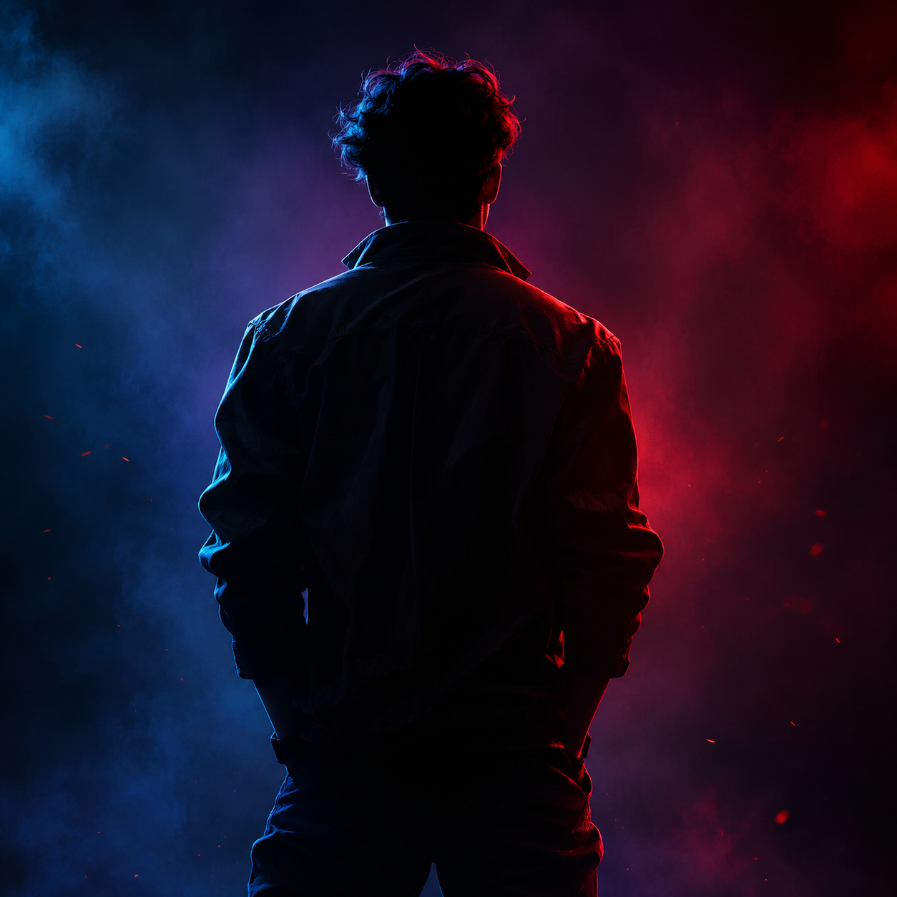

Motion & Editing
Velocity edits, transitions, rhythm, timing and visual storytelling.
↗Hello, I'm Md Mahim Badhon
Video editor · Creator · Building GrabZone
I started editing videos in 2019.

01 / THE POINT OF VIEW
The best work has rhythm. A visual hook, a moment of surprise, a detail you remember.
I create content, explore music production and build websites and GrabZone.
02 / SELECTED WORK
03 / INTERACTIVE MOTION LAB
Choose a study to see its motion response.
04 / THE TOOLKIT
VISUALS · SOUND · TECHNOLOGY
Velocity edits, transitions, rhythm, timing and visual storytelling.
↗Type that moves with purpose — expressive, precise and sound-aware.
↗Exploring lyrics, production, atmosphere and emotion.
↗Turning ideas into useful products and online experiences.
↗SPECIAL INTEREST / AERIAL VISUALS
I enjoy flying drones and seeing familiar places from a different angle.
Aerial views · Creative framing · Visual storytelling
05 / THE JOURNEY
Started exploring video editing and creative expression.
Built a creator identity around edits, presets and motion.
Exploring music, entrepreneurship, technology and digital products.
PERSONAL INTEREST
Cycling is another part of my story.
06 / A LITTLE ABOUT ME
THE PERSON BEHIND THE FRAMESI’m Badhon — a creator who started editing in 2019 and kept exploring. Video, design, music, technology and entrepreneurship connect through one thing: making something from nothing.
FOLLOW THE JOURNEY ↗07 / YOUR TURN